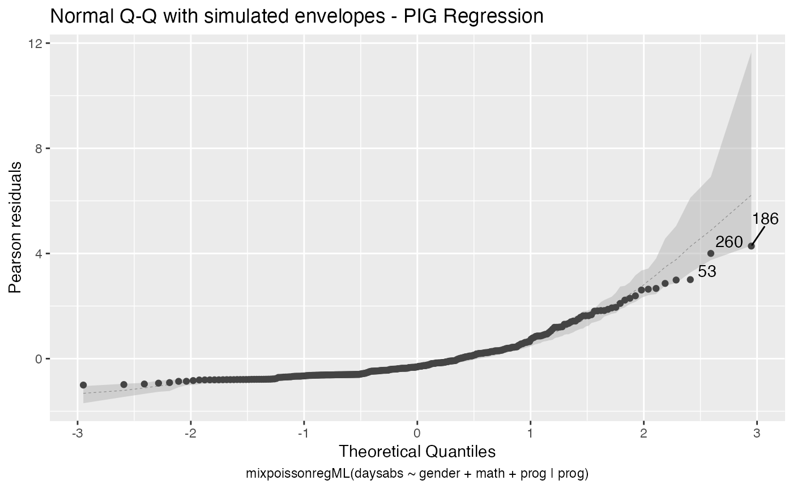

Analyzing overdispersed count data with the mixpoissonreg package
Wagner Barreto-Souza and Alexandre B. Simas
2021-03-04
Source:vignettes/tutorial-mixpoissonreg.Rmd
tutorial-mixpoissonreg.RmdDescription of the dataset
We will consider the dataset studied in Barreto-Souza and Simas (2016). The motivation for this study was to assess the attendance of high school students with respect to their gender, math score and which program they are enrolled. The data consists on 314 high school juniors from two urban high schools. The response variable, denoted by y, and the covariates of interest are:
y: number of days absent;
gender: sex (0=female and 1=male);
math: standardized math score for each student;
academic : indicator of academic program;
vocational: indicator of vocational program.
Model fitting and inference
It is well-known (see, for instance, https://stats.idre.ucla.edu/r/dae/negative-binomial-regression/) that the Poisson regression is not adequate for fitting this dataset. They also conclude that, when compared to the Poisson regression model, the Negative Binomial is more adequate. Therefore, this indicates that the data is overdispersed.
We will assume that the response variables \(Y_i\sim MP(\mu_i, \phi_i)\), that is, that each \(Y_i\) follows a mixed possion distribution with mean \(\mu_i\) and precision parameter \(\phi_i\).
We assume the following regression structures for the mean and precision parameters:
\[\log \mu_i = \beta_0 + \beta_1 {\tt gender}_i + \beta_2 {\tt math}_i + \beta_3 {\tt academic}_i + \beta_4 {\tt vocational}_i \] and
\[\log \phi_i = \alpha_0 + \alpha_1 {\tt gender}_i + \alpha_2 {\tt math}_i + \alpha_3 {\tt academic}_i + \alpha_4 {\tt vocational}_i.\] Let us fit this model under the assumption of Negative Binomial (NB) and Poisson Inverse Gaussian (PIG) distributions.
library(mixpoissonreg)
fit_nb_full <- mixpoissonreg(daysabs ~ gender + math + prog | gender + math + prog,
model = "NB", data = Attendance)
fit_pig_full <- mixpoissonreg(daysabs ~ gender + math + prog | gender + math + prog,
model = "PIG", data = Attendance)The summary for the NB-regression fitting is:
summary(fit_nb_full)
#>
#> Negative Binomial Regression - Expectation-Maximization Algorithm
#>
#> Call:
#> mixpoissonreg(formula = daysabs ~ gender + math + prog | gender +
#> math + prog, data = Attendance, model = "NB")
#>
#>
#> Pearson residuals:
#> RSS Min 1Q Median 3Q Max
#> 322.0142 -1.1751 -0.6992 -0.3600 0.3014 4.7178
#>
#> Coefficients modeling the mean (with link):
#> Estimate Std.error z-value Pr(>|z|)
#> (Intercept) 2.746123 0.147412 18.629 < 2e-16 ***
#> gendermale -0.245113 0.117967 -2.078 0.03773 *
#> math -0.006617 0.002317 -2.856 0.00429 **
#> progAcademic -0.425983 0.132144 -3.224 0.00127 **
#> progVocational -1.269755 0.174444 -7.279 3.37e-13 ***
#>
#> Coefficients modeling the precision (with link):
#> Estimate Std.error z-value Pr(>|z|)
#> (Intercept) 1.414227 0.343243 4.120 3.79e-05 ***
#> gendermale -0.208397 0.203692 -1.023 0.306262
#> math -0.005123 0.004181 -1.225 0.220458
#> progAcademic -1.084418 0.305479 -3.550 0.000385 ***
#> progVocational -1.422051 0.343812 -4.136 3.53e-05 ***
#> ---
#> Signif. codes: 0 '***' 0.001 '**' 0.01 '*' 0.05 '.' 0.1 ' ' 1
#>
#> Efron's pseudo R-squared: 0.1860886
#> Number of iterations of the EM algorithm = 11For the PIG-regressionm, the summary is
summary(fit_pig_full)
#>
#> Poisson Inverse Gaussian Regression - Expectation-Maximization Algorithm
#>
#> Call:
#> mixpoissonreg(formula = daysabs ~ gender + math + prog | gender +
#> math + prog, data = Attendance, model = "PIG")
#>
#>
#> Pearson residuals:
#> RSS Min 1Q Median 3Q Max
#> 239.2040 -1.0836 -0.6058 -0.3062 0.2519 4.1196
#>
#> Coefficients modeling the mean (with link):
#> Estimate Std.error z-value Pr(>|z|)
#> (Intercept) 2.750853 0.165416 16.630 < 2e-16 ***
#> gendermale -0.251161 0.136873 -1.835 0.06651 .
#> math -0.006730 0.002679 -2.512 0.01202 *
#> progAcademic -0.423484 0.148479 -2.852 0.00434 **
#> progVocational -1.260924 0.203436 -6.198 5.71e-10 ***
#>
#> Coefficients modeling the precision (with link):
#> Estimate Std.error z-value Pr(>|z|)
#> (Intercept) 1.211252 0.438442 2.763 0.005734 **
#> gendermale -0.114332 0.304682 -0.375 0.707475
#> math -0.005686 0.006098 -0.932 0.351111
#> progAcademic -1.284018 0.386350 -3.323 0.000889 ***
#> progVocational -1.610037 0.475613 -3.385 0.000711 ***
#> ---
#> Signif. codes: 0 '***' 0.001 '**' 0.01 '*' 0.05 '.' 0.1 ' ' 1
#>
#> Efron's pseudo R-squared: 0.1861608
#> Number of iterations of the EM algorithm = 2632These summaries suggest that gender and math covariates are not significant to explain the precision parameter. So we will obtain fits for the NB and PIG regressions without these variables for the precision paramters, then we will perform Wald and likelihood-ratio tests to confirm that indeed they are not significant.
fit_nb_red <- mixpoissonreg(daysabs ~ gender + math + prog | prog,
model = "NB", data = Attendance)
fit_pig_red <- mixpoissonreg(daysabs ~ gender + math + prog | prog,
model = "PIG", data = Attendance)Let us check the summaries for these regressions:
summary(fit_nb_red)
#>
#> Negative Binomial Regression - Expectation-Maximization Algorithm
#>
#> Call:
#> mixpoissonreg(formula = daysabs ~ gender + math + prog | prog,
#> data = Attendance, model = "NB")
#>
#>
#> Pearson residuals:
#> RSS Min 1Q Median 3Q Max
#> 323.6673 -1.0659 -0.7203 -0.3656 0.3064 4.8768
#>
#> Coefficients modeling the mean (with link):
#> Estimate Std.error z-value Pr(>|z|)
#> (Intercept) 2.752395 0.152504 18.048 < 2e-16 ***
#> gendermale -0.257188 0.116905 -2.200 0.02781 *
#> math -0.006792 0.002274 -2.987 0.00282 **
#> progAcademic -0.423971 0.132284 -3.205 0.00135 **
#> progVocational -1.238556 0.173103 -7.155 8.37e-13 ***
#>
#> Coefficients modeling the precision (with link):
#> Estimate Std.error z-value Pr(>|z|)
#> (Intercept) 1.1124 0.2783 3.997 6.41e-05 ***
#> progAcademic -1.0865 0.3074 -3.534 0.000409 ***
#> progVocational -1.5211 0.3395 -4.480 7.45e-06 ***
#> ---
#> Signif. codes: 0 '***' 0.001 '**' 0.01 '*' 0.05 '.' 0.1 ' ' 1
#>
#> Efron's pseudo R-squared: 0.1861217
#> Number of iterations of the EM algorithm = 2453and
summary(fit_pig_red)
#>
#> Poisson Inverse Gaussian Regression - Expectation-Maximization Algorithm
#>
#> Call:
#> mixpoissonreg(formula = daysabs ~ gender + math + prog | prog,
#> data = Attendance, model = "PIG")
#>
#>
#> Pearson residuals:
#> RSS Min 1Q Median 3Q Max
#> 239.2879 -1.0042 -0.6101 -0.3107 0.2734 4.2814
#>
#> Coefficients modeling the mean (with link):
#> Estimate Std.error z-value Pr(>|z|)
#> (Intercept) 2.805150 0.162182 17.296 < 2e-16 ***
#> gendermale -0.282333 0.122772 -2.300 0.02147 *
#> math -0.007770 0.002398 -3.240 0.00120 **
#> progAcademic -0.422885 0.148013 -2.857 0.00428 **
#> progVocational -1.215877 0.197264 -6.164 7.11e-10 ***
#>
#> Coefficients modeling the precision (with link):
#> Estimate Std.error z-value Pr(>|z|)
#> (Intercept) 0.9277 0.3308 2.805 0.005039 **
#> progAcademic -1.2799 0.3853 -3.322 0.000894 ***
#> progVocational -1.7440 0.4506 -3.870 0.000109 ***
#> ---
#> Signif. codes: 0 '***' 0.001 '**' 0.01 '*' 0.05 '.' 0.1 ' ' 1
#>
#> Efron's pseudo R-squared: 0.1858037
#> Number of iterations of the EM algorithm = 19Now, let us perform a Wald test:
lmtest::waldtest(fit_nb_red, fit_nb_full)
#> Wald test
#>
#> Model 1: daysabs ~ gender + math + prog | prog
#> Model 2: daysabs ~ gender + math + prog | gender + math + prog
#> Res.Df Df Chisq Pr(>Chisq)
#> 1 306
#> 2 304 2 2.4149 0.299and
lmtest::waldtest(fit_pig_red, fit_pig_full)
#> Wald test
#>
#> Model 1: daysabs ~ gender + math + prog | prog
#> Model 2: daysabs ~ gender + math + prog | gender + math + prog
#> Res.Df Df Chisq Pr(>Chisq)
#> 1 306
#> 2 304 2 0.9304 0.628Now, let us perform likelihood tests:
lmtest::lrtest(fit_nb_red, fit_nb_full)
#> Likelihood ratio test
#>
#> Model 1: daysabs ~ gender + math + prog | prog
#> Model 2: daysabs ~ gender + math + prog | gender + math + prog
#> #Df LogLik Df Chisq Pr(>Chisq)
#> 1 8 -854.41
#> 2 10 -853.20 2 2.4077 0.3and
lmtest::lrtest(fit_pig_red, fit_pig_full)
#> Likelihood ratio test
#>
#> Model 1: daysabs ~ gender + math + prog | prog
#> Model 2: daysabs ~ gender + math + prog | gender + math + prog
#> #Df LogLik Df Chisq Pr(>Chisq)
#> 1 8 -857.52
#> 2 10 -857.05 2 0.9507 0.6217The above tests indicate that, indeed, gender and math are not significant for the precision parameter. So we will work with the reduced models.
Let us also build a small data frame containing the estimated mean, \(\widehat{\mu}\), for some combinations of the covariates. First for the NB regression model:
library(tidyr)
library(dplyr)
#>
#> Attaching package: 'dplyr'
#> The following objects are masked from 'package:stats':
#>
#> filter, lag
#> The following objects are masked from 'package:base':
#>
#> intersect, setdiff, setequal, union
gender <- c("female", "male")
prog <- c("Academic", "General", "Vocational")
math <- c(0, 99)
new_cov <- crossing(gender, prog, math)
pred_values_nb <- predict(fit_nb_red, newdata = new_cov)
bind_cols(new_cov, "Predicted_Means_NB" = pred_values_nb)
#> # A tibble: 12 x 4
#> gender prog math Predicted_Means_NB
#> <chr> <chr> <dbl> <dbl>
#> 1 female Academic 0 15.7
#> 2 female Academic 99 8.00
#> 3 female General 0 10.3
#> 4 female General 99 5.24
#> 5 female Vocational 0 4.54
#> 6 female Vocational 99 2.32
#> 7 male Academic 0 12.1
#> 8 male Academic 99 6.19
#> 9 male General 0 7.93
#> 10 male General 99 4.05
#> 11 male Vocational 0 3.51
#> 12 male Vocational 99 1.79Now for the PIG regression model:
pred_values_pig <- predict(fit_pig_red, newdata = new_cov)
bind_cols(new_cov, "Predicted_Means_PIG" = pred_values_pig)
#> # A tibble: 12 x 4
#> gender prog math Predicted_Means_PIG
#> <chr> <chr> <dbl> <dbl>
#> 1 female Academic 0 16.5
#> 2 female Academic 99 7.66
#> 3 female General 0 10.8
#> 4 female General 99 5.02
#> 5 female Vocational 0 4.90
#> 6 female Vocational 99 2.27
#> 7 male Academic 0 12.5
#> 8 male Academic 99 5.78
#> 9 male General 0 8.17
#> 10 male General 99 3.78
#> 11 male Vocational 0 3.69
#> 12 male Vocational 99 1.71Residual analysis
Let us fit the reduced models with envelopes. To reduce computational cost, we will fit these models with the direct maximum likelihood estimation and with respect to the Pearson residual.
set.seed(2021)
# We are fixing the seed for reproducibility
fit_nb_red_env <- mixpoissonregML(daysabs ~ gender + math + prog | prog,
model = "NB", data = Attendance, envelope = 100)
fit_pig_red_env <- mixpoissonregML(daysabs ~ gender + math + prog | prog,
model = "PIG", data = Attendance, envelope = 100)Let us check the coverage of the envelopes for the NB fit:
summary(fit_nb_red_env)
#>
#> Negative Binomial Regression - Maximum-Likelihood Estimation
#>
#> Call:
#> mixpoissonregML(formula = daysabs ~ gender + math + prog | prog,
#> data = Attendance, model = "NB", envelope = 100)
#>
#>
#> Pearson residuals:
#> RSS Min 1Q Median 3Q Max
#> 323.9340 -1.0684 -0.7203 -0.3660 0.3062 4.8766
#>
#> Coefficients modeling the mean (with link):
#> Estimate Std.error z-value Pr(>|z|)
#> (Intercept) 2.752203 0.152251 18.077 < 2e-16 ***
#> gendermale -0.256901 0.116816 -2.199 0.02786 *
#> math -0.006791 0.002271 -2.989 0.00279 **
#> progAcademic -0.423978 0.132089 -3.210 0.00133 **
#> progVocational -1.238641 0.172941 -7.162 7.94e-13 ***
#>
#> Coefficients modeling the precision (with link):
#> Estimate Std.error z-value Pr(>|z|)
#> (Intercept) 1.1185 0.2784 4.017 5.88e-05 ***
#> progAcademic -1.0925 0.3075 -3.552 0.000382 ***
#> progVocational -1.5270 0.3396 -4.496 6.91e-06 ***
#> ---
#> Signif. codes: 0 '***' 0.001 '**' 0.01 '*' 0.05 '.' 0.1 ' ' 1
#>
#> Efron's pseudo R-squared: 0.1861221
#> Percentage of residuals within the envelope = 97.4522
#> Number of function calls by 'optim' = 4and for the PIG fit:
summary(fit_pig_red_env)
#>
#> Poisson Inverse Gaussian Regression - Maximum-Likelihood Estimation
#>
#> Call:
#> mixpoissonregML(formula = daysabs ~ gender + math + prog | prog,
#> data = Attendance, model = "PIG", envelope = 100)
#>
#>
#> Pearson residuals:
#> RSS Min 1Q Median 3Q Max
#> 239.2987 -1.0042 -0.6101 -0.3107 0.2734 4.2816
#>
#> Coefficients modeling the mean (with link):
#> Estimate Std.error z-value Pr(>|z|)
#> (Intercept) 2.805150 0.162182 17.296 < 2e-16 ***
#> gendermale -0.282333 0.122772 -2.300 0.02147 *
#> math -0.007771 0.002398 -3.240 0.00120 **
#> progAcademic -0.422885 0.148011 -2.857 0.00428 **
#> progVocational -1.215877 0.197261 -6.164 7.1e-10 ***
#>
#> Coefficients modeling the precision (with link):
#> Estimate Std.error z-value Pr(>|z|)
#> (Intercept) 0.9277 0.3308 2.805 0.005038 **
#> progAcademic -1.2799 0.3853 -3.322 0.000894 ***
#> progVocational -1.7440 0.4506 -3.870 0.000109 ***
#> ---
#> Signif. codes: 0 '***' 0.001 '**' 0.01 '*' 0.05 '.' 0.1 ' ' 1
#>
#> Efron's pseudo R-squared: 0.1858035
#> Percentage of residuals within the envelope = 94.9045
#> Number of function calls by 'optim' = 6By looking at both coverages, the assumption of the response following a mixed Poisson distribution seems reasonable. Furthermore, both regressions seem to provide adequate fit.
Also, notice that, even though the fits seem adequate, their Efron’s \(R^2\) are low, around 18%. This is due to the high overdispersion of the responses, together with the fact that the mean is not a good predictor for the response when using counting data. Therefore, for datasets with low Efron’s pseudo-\(R^2\), such as this one, we recommend to use the mode. We plan on providing a function from prediction based on the mode in the future.
Let us check the diagnostic plots of the NB fit

and for the PIG fit

Notice that in Residuals vs. Obs. number, the residuals appear to be randomly distributed, skewed, and with no noticeable trend. Thus, also suggesting an adequate fit, together with the quantile-quantile plot with simulated envelopes.
Influence analysis
Let us begin with the global influence analysis. First, for the NB regression model:
Second, for the PIG regression model:
Let us check the impact on the estimates of the removal, for example, of case # 94, which was significant for both models, as well as it was the most significant considering both the Cook’s distance and generalized Cook’s distance. First, for NB regression:
# Relative change for mean-related coefficients
(influence(fit_nb_red)$coefficients.mean[94,] -
coefficients(fit_nb_red, parameters = "mean"))/
coefficients(fit_nb_red, parameters = "mean")
#> (Intercept) gendermale math progAcademic progVocational
#> -0.002673517 -0.012802496 0.017218704 -0.024328409 -0.010166827
# Relative change for precision-related coefficients
(influence(fit_nb_red)$coefficients.precision[94,] -
coefficients(fit_nb_red, parameters = "precision"))/
coefficients(fit_nb_red, parameters = "precision")
#> (Intercept) progAcademic progVocational
#> 0.05296451 0.05422589 0.03873275Now, for the PIG regression:
# Relative change for mean-related coefficients
(influence(fit_pig_red)$coefficients.mean[94,] -
coefficients(fit_pig_red, parameters = "mean"))/
coefficients(fit_pig_red, parameters = "mean")
#> (Intercept) gendermale math progAcademic progVocational
#> -0.001926543 -0.008484376 0.011185047 -0.018039686 -0.007642806
# Relative change for precision-related coefficients
(influence(fit_pig_red)$coefficients.precision[94,] -
coefficients(fit_pig_red, parameters = "precision"))/
coefficients(fit_pig_red, parameters = "precision")
#> (Intercept) progAcademic progVocational
#> 0.04511006 0.03269834 0.02399582We see that case # 94 mainly impacts the precision parameter estimates. Notice that for PIG regression models, the impact is less severe.
Let us check now the local influence.
First for the NB regression:
local_influence_autoplot(fit_nb_red)Now, for PIG regression:
local_influence_autoplot(fit_pig_red)Let us check the influential observations along with their associated covariates and response values. First for the NB regression:
inf_nb_tbl <- tidy_local_influence(fit_nb_red) %>% mutate(.index = row_number()) %>%
pivot_longer(!.index, names_to = "perturbation", values_to = "curvature")
bench_nb_tbl <- local_influence_benchmarks(fit_nb_red) %>%
pivot_longer(everything(), names_to = "perturbation", values_to = "benchmark")
inf_nb_bench_tbl <- left_join(inf_nb_tbl, bench_nb_tbl, by = "perturbation") %>%
mutate(influential = curvature > benchmark) %>% filter(influential == TRUE) %>%
select(-influential, -benchmark, -curvature)
data_nb_tbl <- augment(fit_nb_red) %>% mutate(.index = row_number()) %>%
select(.index, daysabs, gender, math, prog)
influential_nb <- left_join(inf_nb_bench_tbl, data_nb_tbl, by = ".index")
influential_nb
#> # A tibble: 55 x 6
#> .index perturbation daysabs gender math prog
#> <int> <chr> <dbl> <fct> <dbl> <fct>
#> 1 20 mean_explanatory 24 male 4 Academic
#> 2 20 simultaneous_explanatory 24 male 4 Academic
#> 3 36 mean_explanatory 28 female 20 Academic
#> 4 36 simultaneous_explanatory 28 female 20 Academic
#> 5 40 mean_explanatory 27 female 35 Academic
#> 6 40 simultaneous_explanatory 27 female 35 Academic
#> 7 55 hidden_variable 34 female 4 Academic
#> 8 55 mean_explanatory 34 female 4 Academic
#> 9 55 simultaneous_explanatory 34 female 4 Academic
#> 10 57 case_weights 28 male 5 General
#> # … with 45 more rowsLet us check the number of unique influential observations:
influential_nb %>% select(.index) %>% unique() %>% count()
#> # A tibble: 1 x 1
#> n
#> <int>
#> 1 22Now for the PIG regression:
inf_pig_tbl <- tidy_local_influence(fit_pig_red) %>% mutate(.index = row_number()) %>%
pivot_longer(!.index, names_to = "perturbation", values_to = "curvature")
bench_pig_tbl <- local_influence_benchmarks(fit_pig_red) %>%
pivot_longer(everything(), names_to = "perturbation", values_to = "benchmark")
inf_pig_bench_tbl <- left_join(inf_pig_tbl, bench_pig_tbl, by = "perturbation") %>%
mutate(influential = curvature > benchmark) %>% filter(influential == TRUE) %>%
select(-influential, -benchmark, -curvature)
data_pig_tbl <- augment(fit_pig_red) %>% mutate(.index = row_number()) %>%
select(.index, daysabs, gender, math, prog)
influential_pig <- left_join(inf_pig_bench_tbl, data_pig_tbl, by = ".index")
influential_pig
#> # A tibble: 64 x 6
#> .index perturbation daysabs gender math prog
#> <int> <chr> <dbl> <fct> <dbl> <fct>
#> 1 20 hidden_variable 24 male 4 Academic
#> 2 20 mean_explanatory 24 male 4 Academic
#> 3 20 simultaneous_explanatory 24 male 4 Academic
#> 4 28 case_weights 0 female 21 Academic
#> 5 31 case_weights 0 male 1 Academic
#> 6 36 hidden_variable 28 female 20 Academic
#> 7 36 mean_explanatory 28 female 20 Academic
#> 8 36 simultaneous_explanatory 28 female 20 Academic
#> 9 39 precision_explanatory 5 male 1 General
#> 10 40 mean_explanatory 27 female 35 Academic
#> # … with 54 more rowsNow, the number of unique influential observations for the PIG regression:
influential_pig %>% select(.index) %>% unique() %>% count()
#> # A tibble: 1 x 1
#> n
#> <int>
#> 1 28Let us check the informations of case # 94 for the NB and PIG regressions:
influential_nb %>% filter(.index == 94)
#> # A tibble: 5 x 6
#> .index perturbation daysabs gender math prog
#> <int> <chr> <dbl> <fct> <dbl> <fct>
#> 1 94 case_weights 29 female 70 General
#> 2 94 hidden_variable 29 female 70 General
#> 3 94 mean_explanatory 29 female 70 General
#> 4 94 precision_explanatory 29 female 70 General
#> 5 94 simultaneous_explanatory 29 female 70 General
influential_pig %>% filter(.index == 94)
#> # A tibble: 5 x 6
#> .index perturbation daysabs gender math prog
#> <int> <chr> <dbl> <fct> <dbl> <fct>
#> 1 94 case_weights 29 female 70 General
#> 2 94 hidden_variable 29 female 70 General
#> 3 94 mean_explanatory 29 female 70 General
#> 4 94 precision_explanatory 29 female 70 General
#> 5 94 simultaneous_explanatory 29 female 70 GeneralSo, notice that case # 94 is a female, enrolled in the general program, with a high number of absences but with an unexpected high math score for this number of absences.
It is also noteworthy that case # 94 was considered influential for all local perturbation schemes.
Let us check the observations that were found influential for both models:
ind_nb <- influential_nb %>% select(.index) %>% unique()
ind_pig <- influential_pig %>% select(.index) %>% unique()
ind_common <- intersect(ind_nb, ind_pig)
influential_nb %>% filter(.index %in% ind_common$.index) %>% select(-perturbation) %>% unique()
#> # A tibble: 20 x 5
#> .index daysabs gender math prog
#> <int> <dbl> <fct> <dbl> <fct>
#> 1 20 24 male 4 Academic
#> 2 36 28 female 20 Academic
#> 3 40 27 female 35 Academic
#> 4 55 34 female 4 Academic
#> 5 57 28 male 5 General
#> 6 79 35 male 1 Academic
#> 7 80 23 female 21 Academic
#> 8 91 23 female 27 Academic
#> 9 94 29 female 70 General
#> 10 105 19 male 70 General
#> 11 117 35 female 35 Academic
#> 12 130 30 female 34 Academic
#> 13 140 30 female 27 General
#> 14 143 5 female 7 General
#> 15 150 34 female 29 General
#> 16 182 21 female 47 General
#> 17 186 16 male 81 Vocational
#> 18 235 3 female 67 General
#> 19 260 19 male 49 Vocational
#> 20 265 16 female 99 GeneralNow, let us check the influential observations for the NB regression that were not influential for the PIG regression:
ind_nb_pig <- setdiff(ind_nb, ind_pig)
influential_nb %>% filter(.index %in% ind_nb_pig$.index) %>% select(-perturbation) %>% unique()
#> # A tibble: 2 x 5
#> .index daysabs gender math prog
#> <int> <dbl> <fct> <dbl> <fct>
#> 1 118 16 female 8 General
#> 2 188 16 female 75 VocationalFinally, the influential observations for the PIG regression that were not influential for the NB regression:
ind_pig_nb <- setdiff(ind_pig, ind_nb)
influential_pig %>% filter(.index %in% ind_pig_nb$.index) %>% select(-perturbation) %>% unique()
#> # A tibble: 8 x 5
#> .index daysabs gender math prog
#> <int> <dbl> <fct> <dbl> <fct>
#> 1 28 0 female 21 Academic
#> 2 31 0 male 1 Academic
#> 3 39 5 male 1 General
#> 4 83 3 female 84 General
#> 5 209 4 female 41 General
#> 6 213 4 female 63 General
#> 7 253 0 female 29 Academic
#> 8 263 3 male 43 General